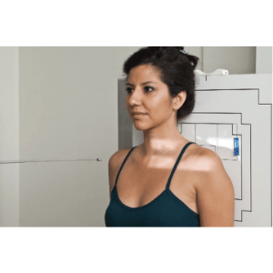
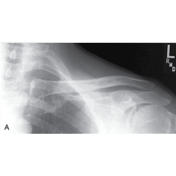
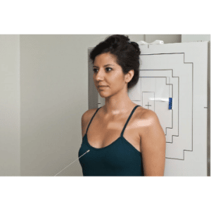
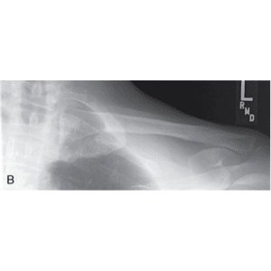
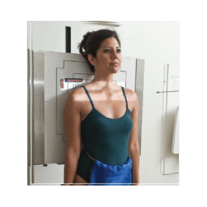
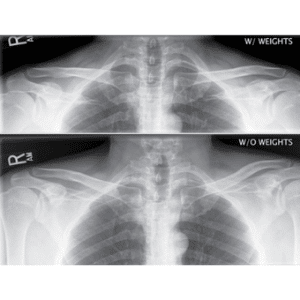

CLAVÍCULA - AP e AP AXIAL
Paciente
Em ortostático ou DD, braço estendido na posição neutra,
centralizar a clavícula em relação ao chassi.
Chassis / Filme
18×24 /24×30 na transversal, panorâmico.
Raio central
AP: ⊥na diáfise da clavícula. AP Axial: com um ângulo de 15º a 30° cranial, orientado para a diáfise da clavícula.
DFF
1,00 m / com bucky.




ART. ACRÔMIO-CLAVICULAR - AP / método Zanca
Paciente
em ortostático COM OS mmss estendido em posição neutra, centralizar o ombro em relação ao chassi.
Chassis / Filme
18×24 longitudinal (unilateral), 30×40 / 35×43
longitudinal (comparativos), ambos panorâmico.
Raio central
com um ângulo de 15 a 20º cranial, orientado p/ espaço acrômio- umeral.
DFF
1,00 m / com bucky.


Observação: Estudo da articulação acrômio-clavicular. Paciente deve manter apnéia expiratória. Poderá ser realizada incidência comparativa a critério médico. Poderá ser realizado incidências com ou sem peso.